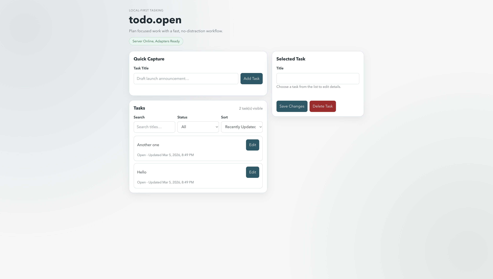

todo.open
A local-first task server with CLI, TUI, and web UI.
Your tasks are plain JSONL on disk — no database, no lock-in.
$ todoopen task create --title "Refactor auth module" --priority high Created task_a1b2: Refactor auth module $ todoopen task list ID TITLE STATUS PRIORITY task_a1b2 Refactor auth module open high # open the web UI $ todoopen web Server listening on http://127.0.0.1:8080 # or the terminal UI $ todoopen tui Server listening · TUI connected
Install
Pick your preferred package manager.
$ npm install -g @justestif/todo-open
# install $ mise use -g go:github.com/justEstif/todo-open/cmd/todoopen@latest $ mise reshim # update to latest (clear cache first) $ mise cache clear && mise use -g go:github.com/justEstif/todo-open/cmd/todoopen@latest $ mise reshim
$ git clone https://github.com/justEstif/todo-open.git $ cd todo-open $ go build ./cmd/todoopen ./cmd/todoopen-server
Then start the server:
$ todoopen web Server listening on http://127.0.0.1:8080
Three interfaces, one API
CLI, web UI, and TUI all talk to the same local server. All stay in sync via SSE.
Create, list, update, and complete tasks from the command line. Scriptable, pipeable, fast.
Browser-based interface with live SSE updates. Quick capture, search, filter, inline edit. No page reloads.
A Bubble Tea TUI: browse, create, edit, navigate deps — all from the terminal. Starts the server automatically.

# CLI $ todoopen task create --title "Write tests" --priority high $ todoopen task list $ todoopen task done task_a1b2 # Web UI $ todoopen web # TUI $ todoopen tui # or point any of them at an existing server $ todoopen tui --server http://127.0.0.1:8080
How it works
One server. Plain files. Everything else is a client.
.todoopen/tasks.jsonl ← plain text, yours forever
│
todoopen server ← local HTTP :8080
(REST + SSE)
│
┌─────┼──────────────┬──────────┐
CLI web UI TUI adapters
(live SSE) (live SSE) sync/view
Tasks are stored as tasks.jsonl — one JSON object per line. No database, no daemon to manage. Open the file in any editor, grep it, version it.
Full REST + Server-Sent Events. Any tool that can speak HTTP can create, query, and watch tasks. curl is a valid client.
Web UI and TUI subscribe to /v1/tasks/events via SSE — task changes appear instantly without polling.
No cloud dependency, no account required. Tasks stay on your filesystem. Export is just copying a file.
Adapters
Extend sync and view behavior with separate binaries. Write them in any language.
| Adapter | Kind | What it does |
|---|---|---|
todoopen-adapter-sync-git |
sync | Push/pull tasks.jsonl to a git repo |
todoopen-adapter-sync-s3 |
sync | Sync workspace to an S3 bucket |
todoopen-adapter-view-markdown |
view | Render tasks as a TASKS.md file |
| build your own | sync view | Any language, any backend — just speak the protocol |
The contracts are small — implement Name() and one or two methods:
// View adapter — render tasks however you want Name() string RenderTasks(ctx, []Task) ([]byte, error) // Sync adapter — push/pull to any backend Name() string Push(ctx, []Task) error Pull(ctx) ([]Task, error)
Configure in .todoopen/config.toml:
[adapters.git]
bin = "todoopen-adapter-sync-git"
[adapters.git.config]
remote = "origin"
branch = "main"[server]
addr = "127.0.0.1:8080"
[adapters.git]
bin = "todoopen-adapter-sync-git"
[adapters.git.config]
remote = "${GIT_REMOTE}" # expanded from env at runtime
branch = "tasks"
[adapters.s3]
bin = "todoopen-adapter-sync-s3"
[adapters.s3.config]
bucket = "${S3_BUCKET}"
region = "us-east-1"${VAR} in config values — expanded from the environment at runtime so secrets never live in the file.
See adapters.md ↗ to build your own.
Agent support
Built-in primitives for AI agent coordination — leases, heartbeats, idempotency keys.
Agents can safely pick up and work on tasks without stepping on each other or on you. The workflow: fetch next task → claim with a lease → heartbeat while working → complete or release.
# fetch the next open task $ curl -s localhost:8080/v1/tasks/next { "id": "task_a1b2", "title": "Refactor auth module" } # claim it (idempotent, lease = 5 min) $ curl -s -X POST localhost:8080/v1/tasks/task_a1b2/claim \ -H 'X-Idempotency-Key: run-42' # heartbeat to keep the lease alive $ curl -s -X POST localhost:8080/v1/tasks/task_a1b2/heartbeat # complete $ curl -s -X POST localhost:8080/v1/tasks/task_a1b2/complete
Claims expire automatically. If an agent crashes, the task becomes available again. No manual cleanup.
Pass X-Idempotency-Key on mutating requests. Safe to retry without duplicating work.
Humans can always release an agent's claim. The API and CLI never block human intervention.
todoopen --agent-info for a machine-readable description of all endpoints and the recommended workflow — no server needed.
See agent-primitives.md ↗ for the full coordination contract.
Reference
Full documentation on GitHub.
Full REST + SSE API reference. All endpoints, request/response shapes, error codes.
adapters.md ↗Adapter protocol, config format, and how to build your own in any language.
schema.md ↗Task schema, field definitions, status/priority values, JSONL format.
architecture.md ↗Internal design — package layout, request flow, storage layer.
human-ux-invariants.md ↗Human-first UX rules, workflow invariants, and CLI output contract.
agent-primitives.md ↗Agent coordination contract — claim, heartbeat, release, idempotency.